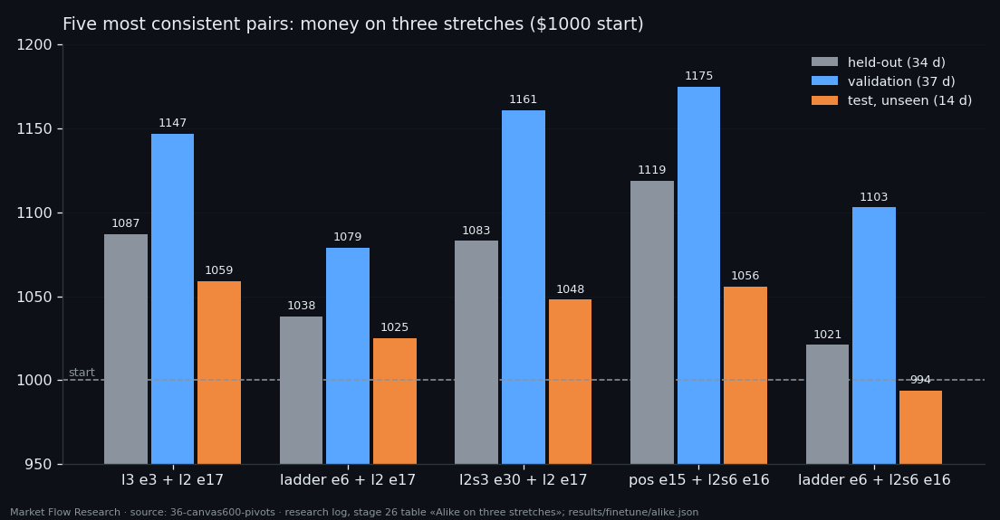
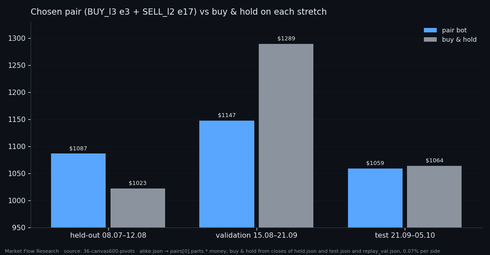

The Pair That Behaves the Same on Three Stretches of Data — How the Live Bot's Networks Were Chosen
Ranking 440 buy-and-sell pairs by money on the month they were picked on gives a list of lucky pairs. So we asked a different question: which pair behaves the same — same time in the market, same number of longs and shorts per day, same daily growth — on three stretches of BTC: held-out weeks from training, the validation month, and fourteen days after validation that no step of the selection had touched. Of 440 pairs, 180 traded on all three. The most consistent one, `BUY_l3` epoch 3 with `SELL_l2` epoch 17, made $1087, $1147 and $1059 on the three stretches. It became the live bot.
① Three stretches, one pair at a time
The 42 "potentially best" networks were copied out of their training runs and run, unchanged, over three stretches of BTC at 10-minute steps. Held-out (08.07 20:30 – 12.08 05:00 UTC, 4,445 steps) is the part of training data on which epochs were chosen. Validation (15.08 – 21.09, 5,265 steps) is where windows, thresholds and the networks themselves were chosen. Test (21.09 05:10 – 05.10 14:10, 2,001 steps) is data the collector recorded after all that — the networks had never been run on it.
Before trusting the new runs, the code was checked against the old ones: on the first 300 test steps, the output of `BUY_pos` epoch 9 matches the exported buy-only bot's own replay exactly, and on held-out the outputs of `BUY_bce` epochs 3 and 17 match the training series to rounding (≤ 5·10⁻⁵).
② Consistency, not money, as the score
Each pair was run on each stretch with the same rules as before (one trade per 2.3% leg, take 1.9%, stop 2.5%, opposite signal closes). For each stretch four numbers were measured: share of time in a trade, longs per day, shorts per day, and daily growth — (money/1000)^(1/days) − 1. For each measure, the spread between its highest and lowest value across the three stretches was divided by that measure's standard deviation over all pairs; the score is the sum of the four spreads. Lower means the pair behaves more alike everywhere.
Pairs that do not trade at least one long and one short on every stretch would look perfectly "consistent" with zeros, so they were set aside: 260 of 440. Of the remaining 180, the most consistent is `BUY_l3` epoch 3 (window 340 minutes, θ 2.72) with `SELL_l2` epoch 17 (30 minutes, θ 1.74), score 2.29: in a trade 52% / 46% / 49% of the time, 0.17 / 0.19 / 0.21 longs and 0.12 / 0.16 / 0.14 shorts per day, daily growth +0.24% / +0.37% / +0.40%.

③ Against buy & hold on each stretch — and why this pair went live
The pair made money on all three stretches. Against simply holding BTC: it beat it on the held-out weeks, when BTC rose only 2.4% ($1087 vs $1023); it trailed badly in the validation month, when BTC rose about 29% ($1147 vs ~$1289); and on the unseen test it finished level ($1059 vs $1064, BTC +6.5%). A bot that is in a trade half the time and shorts some of it cannot keep up with a strong rally; it can earn when the market goes nowhere.
That is the profile the selection was looking for — not the richest pair, but the one least likely to change character on new data. On 5 October it was frozen and handed to the live bot: same weights, W 340 / θ 2.72 for buys and W 30 / θ 1.74 for sells, same rules. Fourteen days of test with about five trades is still a thin check. The next article is the overview of bot 7 — training, every stretch, and the list of its real trades so far.

Reproduce this study
- Research log (.md, Ukrainian): goal, data, plan, scripts, every confirmed stage and table — enough to rerun the study
- Reproduction kit (.zip): the study's scripts, project rules and base scripts that build every class
If this changed how you read the tape, the natural next step is Volume Is the Fuel — Not the Steering Wheel — We recorded the Binance order book every second for six coins over five months and ran eighteen tests on what volume really does.
Volume Is the Fuel — Not the Steering Wheel
We recorded the Binance order book every second for six coins over five months and ran eighteen tests on what volume really does.
About Market Research Lab — What We Collect and Why
Most market commentary is storytelling.
From Calm to Calm: a Standard for What Counts as a Signal (BTC)
We stopped defining market signals with a stopwatch.
The Wall That Goes Quiet: What Resting Liquidity Predicts
We measured resting limit liquidity sitting on both sides of the book second by second across six coins, and asked the only question that matters:….
Comments
Discussion is powered by GitHub. Enable it by adding secrets/giscus.json (repo IDs from giscus.app).